58:19 · 34 OPERE
Alcuni precursori di George Orwell.
Il filo del discorso
Dr Divago propone una costellazione di letture per sottrarre Orwell alla sol’immagine del Grande Fratello. Il percorso comincia dalla città ideale di Platone e passa per le utopie rinascimentali, la disciplina dello Stato e la satira dei vizi sociali. Il relatore mette in discussione la promessa che una organizzazione perfetta possa risolvere ogni conflitto senza limitare la libertà delle persone. Con Bellamy e Wells il futuro industriale diventa un laboratorio narrativo in cui osservare insieme abbondanza, disuguaglianza e perdita della memoria. Il Novecento introduce poi la collettività numerata di Zamjatin, la giustizia inaccessibile di Kafka, il condizionamento di Huxley e il prigioniero rivoluzionario di Koestler. Non tutti questi accostamenti hanno lo stesso statuto: la lettura di Noi da parte di Orwell è documentata, mentre altre connessioni sono ipotesi interpretative del relatore. La conclusione estende il discorso a opere successive a Orwell, dalla distruzione dei libri di Bradbury al conformismo rappresentato da Ionesco e alla critica di Marcuse. Fra il rifiuto di Bartleby, la resistenza di Prometeo e la difesa del pensiero individuale, emerge una domanda comune: come continuare a giudicare quando il gruppo pretende di stabilire in anticipo ciò che si può pensare?
I libri nel discorso

1984
Copertina: Newton Compton · edizione illustrativa
1984 esplicito, ripreso nel confronto con Kafka e nella conclusione biografica.
Passaggio 2:13 ↗ · Fonti e libro ↗
La fattoria degli animali
Copertina: A. Mondadori Scuola · edizione scolastica
La fattoria degli animali esplicita fra i titoli più noti.
Passaggio 2:13 ↗ · Fonti e libro ↗
La Repubblica
Copertina: Laterza · La Repubblica · edizione con testo a fronte di riferimento
Immagine associata all’ISBN di riferimento e controllata visivamente; edizione e traduzione non identificate come quelle citate o lette nel video.
La Repubblica esplicita nel discorso sulla città ideale.
Passaggio 3:39 ↗ · Fonti e libro ↗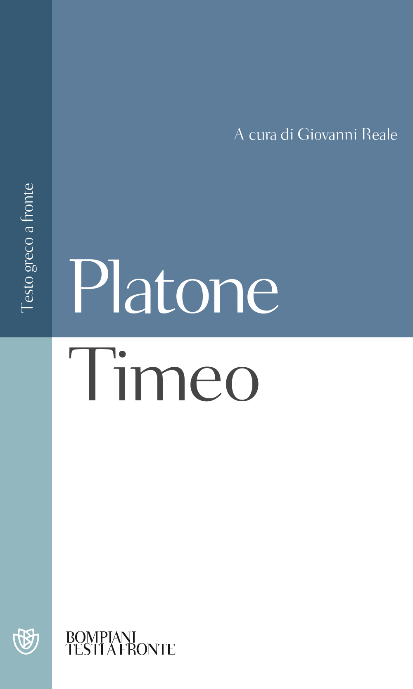
Timeo
Copertina: Copertina ufficiale Bompiani, Testi a fronte, a cura di Giovanni Reale, 2000, ISBN 9788845290268: autore e titolo leggibili su campiture azzurre e bianche.
Immagine autentica dell’opera, controllata visivamente; l’edizione di riferimento non è attribuita al filmato.
Timeo esplicito insieme al Crizia.
Passaggio 4:31 ↗ · Fonti e libro ↗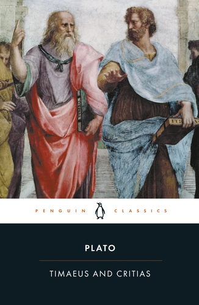
Crizia
Volume congiunto · Timeo e Crizia: Copertina ufficiale della RACCOLTA Timaeus and Critias, Penguin Classics 2008, traduzione di Desmond Lee riveduta da Thomas Kjeller Johansen, ISBN 9780140455045. Include entrambi i dialoghi; non è una copertina autonoma del Crizia.
Immagine autentica dell’opera, controllata visivamente; l’edizione di riferimento non è attribuita al filmato.
Crizia esplicito nel racconto di Atlantide.
Passaggio 4:31 ↗ · Fonti e libro ↗
Bibbia
Copertina: San Paolo, 2014 · Nuova Versione dai Testi Antichi · edizione di riferimento
Bibbia richiamata genericamente per comunità distrutte; non assegnato un libro specifico.
Passaggio 5:59 ↗ · Fonti e libro ↗
Corano
Copertina: BUR Classici, edizione aggiornata
Edizione con introduzione, traduzione e commento di Alessandro Bausani, a cura di Layla Mustapha Ammar. Anno della ristampa non dedotto dalla copertina; nessuna edizione attribuita al video.
Corano esplicito; non identificata con certezza la sura evocata.
Passaggio 6:19 ↗ · Fonti e libro ↗
Utopia
Copertina: Demetra, 2010 · edizione di riferimento
Utopia di Tommaso Moro esplicita.
Passaggio 7:18 ↗ · Fonti e libro ↗
Il Principe
Copertina: Feltrinelli · 2013 · a cura di Ugo Dotti
Immagine autentica dell’opera, controllata visivamente; l’edizione di riferimento non è attribuita al filmato.
Il Principe / De principatibus esplicito.
Passaggio 9:21 ↗ · Fonti e libro ↗
La Città del Sole
Copertina: Adelphi, Piccola Biblioteca 340,1995,179 p, ISBN 9788845911118; introduzione e commento di Alberto Savinio. Catalogo corrente nona edizione, distinta dall’ebook 2023. Copertina editoriale autentica; non edizione confermata nel filmato. La presentazione di Savinio risale alla edizione Colombo 1944.
Immagine autentica dell’opera, controllata visivamente; l’edizione di riferimento non è attribuita al filmato.
La Città del Sole di Campanella esplicita.
Passaggio 11:32 ↗ · Fonti e libro ↗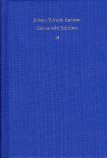
Christianopolis (Reipublicae Christianopolitanae descriptio)
Raccolta contenente Christianopolis · Gesammelte Schriften 14: Copertina ufficiale del volume 14 delle Gesammelte Schriften, Frommann-Holzboog 2017, a cura di Frank Böhling e Wilhelm Schmidt-Biggemann, ISBN 9783772814426. La tela blu reca autore, serie e numero 14: il volume contiene Christianopolis e Christenburg, non citato autonomamente nel video.
Immagine autentica dell’opera, controllata visivamente; l’edizione di riferimento non è attribuita al filmato.
Christianopolis e Johann Valentin Andreae espliciti, normalizzati dalla trascrizione automatica.
Passaggio 13:11 ↗ · Fonti e libro ↗
Leviathan
Copertina: Copertina ufficiale Penguin Classics 2017, a cura di Christopher Brooke, ISBN 9780141395098: dettaglio della incisione del sovrano con corpo di persone e fascia scura con autore e titolo. Non è il frontespizio completo della prima edizione.
Immagine autentica dell’opera, controllata visivamente; l’edizione di riferimento non è attribuita al filmato.
Leviathan è richiamato esplicitamente.
Passaggio 14:44 ↗ · Fonti e libro ↗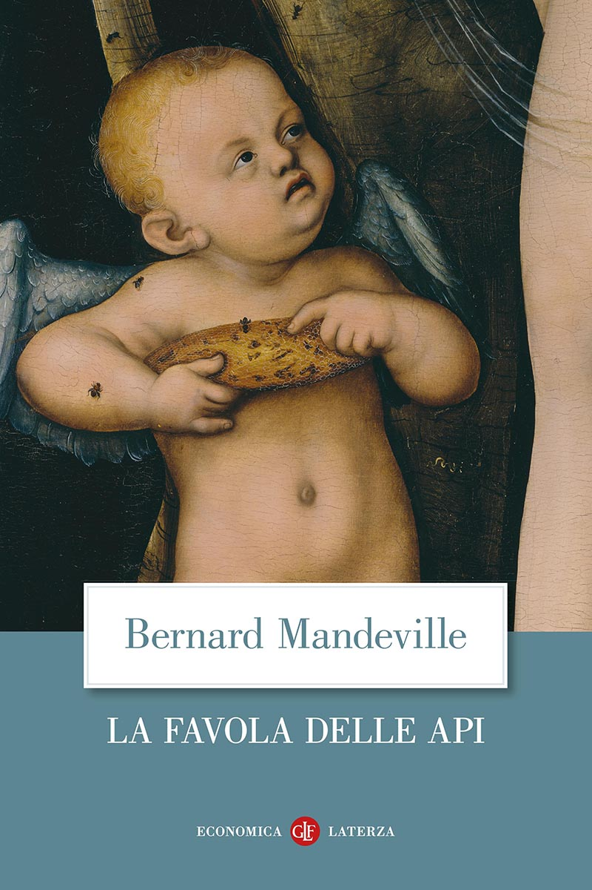
La favola delle api
Copertina: Laterza · Economica Laterza · edizione di riferimento
Favola delle api di Mandeville esplicita.
Passaggio 17:05 ↗ · Fonti e libro ↗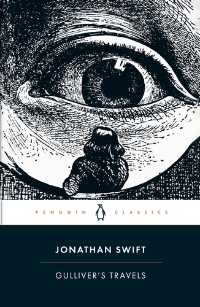
I viaggi di Gulliver (Gulliver’s Travels)
Copertina: Copertina ufficiale Penguin Classics 2003, a cura di Robert DeMaria, ISBN 9780141439495: grande occhio inciso e piccolo Gulliver, fascia nera con titolo e autore.
Immagine autentica dell’opera, controllata visivamente; l’edizione di riferimento non è attribuita al filmato.
Viaggi di Gulliver di Swift espliciti.
Passaggio 19:00 ↗ · Fonti e libro ↗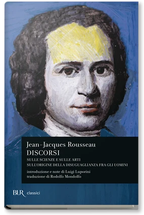
Discorso sulle scienze e le arti
Copertina della raccolta Discorsi: BUR · Discorsi, 2007
Copertina autentica del volume BUR Discorsi, che contiene il Discorso sulle scienze e le arti e il Discorso sulla disuguaglianza. L’ISBN riguarda il volume contenitore; il secondo testo non viene aggiunto come citazione di questo filmato.
Discorso sulle scienze e le arti esplicito.
Passaggio 19:58 ↗ · Fonti e libro ↗
Il contratto sociale
Copertina: Laterza · Economica · ristampa 2023 · edizione di riferimento
Contratto sociale esplicito, ripreso nel finale.
Passaggio 19:58 ↗ · Fonti e libro ↗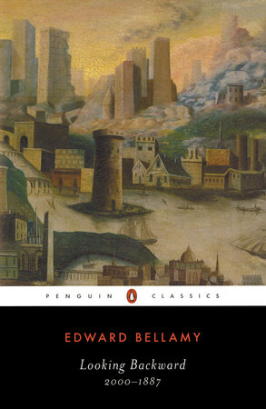
Looking Backward: 2000–1887
Copertina: Copertina ufficiale Penguin Classics 1982, introduzione di Cecelia Tichi, ISBN 9780140390186: paesaggio urbano e fascia nera. Scaricata la copertina completa, sostituendo il riquadro promozionale orizzontale.
Immagine autentica dell’opera, controllata visivamente; l’edizione di riferimento non è attribuita al filmato.
Edward Bellamy e Looking Backward espliciti; normalizzati titolo e anni.
Passaggio 24:10 ↗ · Fonti e libro ↗
Psicologia delle folle
Copertina: Apogeo · 2025 · nuova traduzione dell’edizione integrale originale
Immagine autentica dell’opera, controllata visivamente; l’edizione di riferimento non è attribuita al filmato.
Psicologia delle folle e Le Bon espliciti.
Passaggio 28:10 ↗ · Fonti e libro ↗
La macchina del tempo
Copertina: Feltrinelli · Universale Economica, I classici
La macchina del tempo di Wells esplicita.
Passaggio 28:15 ↗ · Fonti e libro ↗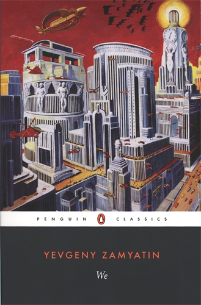
Noi (We)
Copertina: Copertina ufficiale Penguin Classics 1993, traduzione e introduzione di Clarence Brown, ISBN 9780140185850: città meccanizzata policroma, titolo We e autore Yevgeny Zamyatin.
Immagine autentica dell’opera, controllata visivamente; l’edizione di riferimento non è attribuita al filmato.
Noi / We di Zamjatin esplicito.
Passaggio 32:36 ↗ · Fonti e libro ↗
Il processo
Copertina: Adelphi · gli Adelphi, 2020 · edizione di riferimento
Il processo di Kafka esplicito.
Passaggio 33:50 ↗ · Fonti e libro ↗
Il castello (Das Schloss)
Copertina: Suhrkamp, edizione tedesca in brossura, 423 pagine, prima uscita della collana 2006, ristampa 10 luglio 2025; romanzo pubblicato postumo nel 1926.
Immagine autentica dell’opera, controllata visivamente; l’edizione di riferimento non è attribuita al filmato.
Il castello di Kafka esplicito.
Passaggio 33:50 ↗ · Fonti e libro ↗
La ribellione delle masse (La rebelión de las masas)
Copertina: Immagine dell’edizione spagnola Lucemar, catalogo Plutón, 19 febbraio 2026, 288 pagine, brossura. Opera pubblicata in volume nel 1930, dopo articoli del 1929.
Copertina autentica Lucemar, titolo nero e autore rosso su celle esagonali chiare, una cella rossa e un’ape. Edizione di riferimento 2026, non attribuita al filmato. I tentativi sul catalogo universitario e sull’immagine Planeta non hanno avuto esito; non si riporta il dato palesemente incongruo di tre pagine presente nella scheda Espasa.
La ribellione delle masse di Ortega esplicita.
Passaggio 38:19 ↗ · Fonti e libro ↗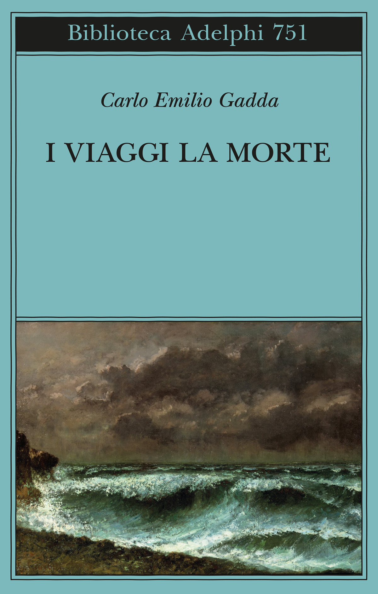
Lingua letteraria e lingua dell’uso
Identificazione probabile
Raccolta contenente il saggio · I viaggi la morte: Copertina ufficiale della RACCOLTA I viaggi la morte, Adelphi 2023, a cura di Mariarosa Bricchi, Biblioteca Adelphi 751, ISBN 9788845938078: tela verde con paesaggio marino di Courbet. Contiene il saggio; non è una sua copertina autonoma.
Immagine autentica dell’opera, controllata visivamente; l’edizione di riferimento non è attribuita al filmato.
Gadda e signora Cesira espliciti; il titolo non è pronunciato, identificazione probabile tramite il passo corrispondente.
Passaggio 40:11 ↗ · Fonti e libro ↗
Il mondo nuovo
Copertina della raccolta: Mondadori · Oscar Moderni · 2016
L’immagine mostra il volume Mondadori che riunisce Il mondo nuovo e Ritorno al mondo nuovo. Il collegamento nel video riguarda il primo romanzo, per allusione al titolo inglese; non identifica un’edizione usata dal relatore.
Il mondo nuovo di Huxley esplicito.
Passaggio 40:42 ↗ · Fonti e libro ↗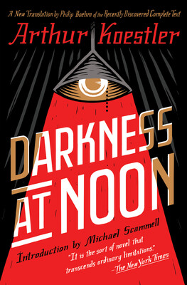
Buio a mezzogiorno (Darkness at Noon)
Copertina: Copertina ufficiale Scribner 2019, nuova traduzione di Philip Boehm dal manoscritto tedesco, introduzione di Michael Scammell, ISBN 9781501161315: occhio e fascio rosso su sfondo nero. È una edizione successiva alla prima del 1940.
Immagine autentica dell’opera, controllata visivamente; l’edizione di riferimento non è attribuita al filmato.
Darkness at Noon di Koestler esplicito; titolo italiano normalizzato.
Passaggio 42:15 ↗ · Fonti e libro ↗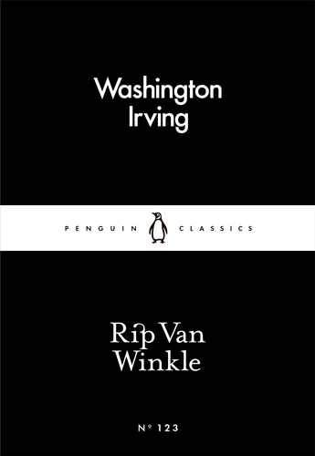
Rip Van Winkle
Copertina: Copertina ufficiale Penguin Little Black Classics numero 123, edizione digitale 2016, ISBN 9780241250358: nero, fascia bianca e titolo bianco. La scheda di riferimento è dell’eBook, non di una edizione cartacea presunta.
Immagine autentica dell’opera, controllata visivamente; l’edizione di riferimento non è attribuita al filmato.
Rip Van Winkle di Washington Irving esplicito.
Passaggio 43:23 ↗ · Fonti e libro ↗Rip van Winkle
Raccolta di due radiodrammi · Suhrkamp: Copertina ufficiale della RACCOLTA Herr Biedermann und die Brandstifter. Rip van Winkle. Zwei Hörspiele, Suhrkamp Taschenbuch 599, prima edizione della raccolta 1980, ristampa 2013, ISBN 9783518370995. Contiene Rip van Winkle: l’altro radiodramma non è aggiunto come citazione del video.
Immagine autentica dell’opera, controllata visivamente; l’edizione di riferimento non è attribuita al filmato.
Rip van Winkle di Max Frisch esplicito; genere riscontrato come radiodramma.
Passaggio 43:30 ↗ · Fonti e libro ↗
Homo faber. Ein Bericht
Copertina: Suhrkamp taschenbuch 354, edizione tascabile dal 1977, 208 pagine; immagine della ristampa del catalogo attuale. Romanzo originale del 1957.
Immagine autentica dell’opera, controllata visivamente; l’edizione di riferimento non è attribuita al filmato.
Homo faber esplicito come opera successiva di Frisch.
Passaggio 43:30 ↗ · Fonti e libro ↗
Bartleby lo scrivano
Copertina della raccolta: Bompiani · Bartleby lo scrivano e altri racconti · 2018
Copertina della raccolta Bompiani che contiene Bartleby lo scrivano. Non è presentata come copertina di un’edizione autonoma del racconto né come l’esemplare citato nel video.
Bartleby di Melville esplicito.
Passaggio 44:32 ↗ · Fonti e libro ↗
Fahrenheit 451
Copertina: Edizione inglese Simon & Schuster, ISBN 9781451673265; immagine editoriale con dicitura 60th Anniversary Edition.
Immagine autentica fornita dall’editore per ISBN 9781451673265, con grafica del sessantesimo anniversario. La scheda commerciale riporta 10 gennaio 2012; tale data non viene usata per retrodatare la grafica anniversario né confusa con la prima pubblicazione del romanzo nel 1953. Nessuna edizione mostrata dal relatore è qui identificata.
Fahrenheit 451 di Bradbury esplicito.
Passaggio 47:25 ↗ · Fonti e libro ↗
Il rinoceronte
Copertina: Einaudi · Collezione di teatro
Copertina autentica controllata visivamente. Edizione di riferimento, non identificata come quella usata nel video.
Rhinoceros / Il rinoceronte di Ionesco esplicito.
Passaggio 48:41 ↗ · Fonti e libro ↗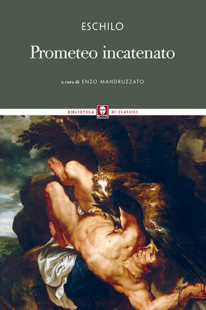
Prometeo incatenato
Identificazione probabile
Copertina: Lindau · Biblioteca di classici · 2015 · a cura di Enzo Mandruzzato
Immagine autentica dell’opera, controllata visivamente; non identifica l’edizione usata nel video.
Dialogo fra Prometeo ed Hermes riconoscibile; titolo non pronunciato, identificazione probabile.
Passaggio 53:00 ↗ · Fonti e libro ↗
L’uomo a una dimensione
Copertina: Einaudi, Piccola Biblioteca Einaudi, 1999
Copertina di un’edizione bibliografica dell’opera, con introduzione di Luciano Gallino. La citazione nel video resta probabile; questa edizione non vi è confermata.
L’uomo a una dimensione di Marcuse esplicito.
Passaggio 54:39 ↗ · Fonti e libro ↗